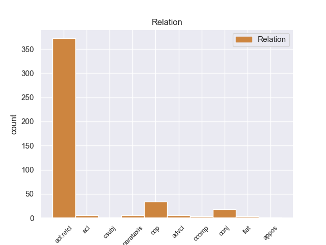
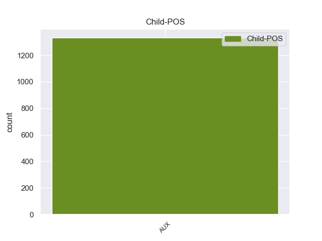

Distribution of features within this leaf



Morphosyntax Rules sorted by frequency.
- When the dependent token is the relative clause modifier(acl:relcl) of the head token, and the head token is PROPN and the dependent token is VERB, the Tense needs to be Past.
1 Mientras _ _ _ _ 0 _ _ _
2 tanto _ _ _ _ 0 _ _ _
3 , _ _ _ _ 0 _ _ _
4 los _ _ _ _ 0 _ _ _
5 Los _ _ _ _ 0 _ _ _
6 Angeles angeles PROPN _ _ 0 _ _ _
7 Lakers _ _ _ _ 0 _ _ _
8 , _ _ _ _ 0 _ _ _
9 que _ _ _ _ 0 _ _ _
10 habían _ _ _ _ 0 _ _ _
11 elegido elegir VERB _ Gender=Masc|Number=Sing|Tense=Past|VerbForm=Part 6 acl:relcl _ _
12 a _ _ _ _ 0 _ _ _
13 el _ _ _ _ 0 _ _ _
14 jugador _ _ _ _ 0 _ _ _
15 en _ _ _ _ 0 _ _ _
16 en _ _ _ _ 0 _ _ _
17 la _ _ _ _ 0 _ _ _
18 trigésimo _ _ _ _ 0 _ _ _
19 primera _ _ _ _ 0 _ _ _
20 posición _ _ _ _ 0 _ _ _
21 de _ _ _ _ 0 _ _ _
22 el _ _ _ _ 0 _ _ _
23 Draft _ _ _ _ 0 _ _ _
24 de _ _ _ _ 0 _ _ _
25 la _ _ _ _ 0 _ _ _
26 NBA _ _ _ _ 0 _ _ _
27 de _ _ _ _ 0 _ _ _
28 1973 _ _ _ _ 0 _ _ _
29 , _ _ _ _ 0 _ _ _
30 habían _ _ _ _ 0 _ _ _
31 traspasado _ _ _ _ 0 _ _ _
32 sus _ _ _ _ 0 _ _ _
33 derechos _ _ _ _ 0 _ _ _
34 a _ _ _ _ 0 _ _ _
35 Cleveland _ _ _ _ 0 _ _ _
36 Cavaliers _ _ _ _ 0 _ _ _
37 a _ _ _ _ 0 _ _ _
38 cambio _ _ _ _ 0 _ _ _
39 de _ _ _ _ 0 _ _ _
40 una _ _ _ _ 0 _ _ _
41 futura _ _ _ _ 0 _ _ _
42 primera _ _ _ _ 0 _ _ _
43 ronda _ _ _ _ 0 _ _ _
44 de _ _ _ _ 0 _ _ _
45 el _ _ _ _ 0 _ _ _
46 draft _ _ _ _ 0 _ _ _
47 . _ _ _ _ 0 _ _ _
1 En _ _ _ _ 0 _ _ _
2 1939 _ _ _ _ 0 _ _ _
3 es _ _ _ _ 0 _ _ _
4 elegido elegir VERB _ Gender=Masc|Number=Sing|Tense=Past|VerbForm=Part 5 cop _ _
5 Provincial provincial PROPN _ _ 0 _ _ _
6 de _ _ _ _ 0 _ _ _
7 Castilla _ _ _ _ 0 _ _ _
8 , _ _ _ _ 0 _ _ _
9 y _ _ _ _ 0 _ _ _
10 será _ _ _ _ 0 _ _ _
11 elegido _ _ _ _ 0 _ _ _
12 en _ _ _ _ 0 _ _ _
13 otras _ _ _ _ 0 _ _ _
14 dos _ _ _ _ 0 _ _ _
15 ocasiones _ _ _ _ 0 _ _ _
16 en _ _ _ _ 0 _ _ _
17 diferentes _ _ _ _ 0 _ _ _
18 años _ _ _ _ 0 _ _ _
19 . _ _ _ _ 0 _ _ _
1 En _ _ _ _ 0 _ _ _
2 1939 _ _ _ _ 0 _ _ _
3 es _ _ _ _ 0 _ _ _
4 elegido _ _ _ _ 0 _ _ _
5 Provincial provincial PROPN _ _ 0 _ _ _
6 de _ _ _ _ 0 _ _ _
7 Castilla _ _ _ _ 0 _ _ _
8 , _ _ _ _ 0 _ _ _
9 y _ _ _ _ 0 _ _ _
10 será _ _ _ _ 0 _ _ _
11 elegido elegir VERB _ Gender=Masc|Number=Sing|Tense=Past|VerbForm=Part 5 conj _ _
12 en _ _ _ _ 0 _ _ _
13 otras _ _ _ _ 0 _ _ _
14 dos _ _ _ _ 0 _ _ _
15 ocasiones _ _ _ _ 0 _ _ _
16 en _ _ _ _ 0 _ _ _
17 diferentes _ _ _ _ 0 _ _ _
18 años _ _ _ _ 0 _ _ _
19 . _ _ _ _ 0 _ _ _
1 Bernardo bernardo PROPN _ Gender=Masc|Number=Sing 0 _ _ _
2 de _ _ _ _ 0 _ _ _
3 Mora _ _ _ _ 0 _ _ _
4 ( _ _ _ _ 0 _ _ _
5 Porreras _ _ _ _ 0 _ _ _
6 , _ _ _ _ 0 _ _ _
7 Islas _ _ _ _ 0 _ _ _
8 Baleares _ _ _ _ 0 _ _ _
9 , _ _ _ _ 0 _ _ _
10 bautizado _ _ _ _ 0 _ _ _
11 el _ _ _ _ 0 _ _ _
12 13 _ _ _ _ 0 _ _ _
13 de _ _ _ _ 0 _ _ _
14 octubre _ _ _ _ 0 _ _ _
15 de _ _ _ _ 0 _ _ _
16 1614 _ _ _ _ 0 _ _ _
17 -- _ _ _ _ 0 _ _ _
18 Granada _ _ _ _ 0 _ _ _
19 , _ _ _ _ 0 _ _ _
20 enterrado enterrado VERB _ Gender=Masc|Number=Sing|Tense=Past|VerbForm=Part 1 acl _ _
21 el _ _ _ _ 0 _ _ _
22 26 _ _ _ _ 0 _ _ _
23 de _ _ _ _ 0 _ _ _
24 enero _ _ _ _ 0 _ _ _
25 de _ _ _ _ 0 _ _ _
26 1684 _ _ _ _ 0 _ _ _
27 ) _ _ _ _ 0 _ _ _
28 , _ _ _ _ 0 _ _ _
29 escultor _ _ _ _ 0 _ _ _
30 de _ _ _ _ 0 _ _ _
31 el _ _ _ _ 0 _ _ _
32 barroco _ _ _ _ 0 _ _ _
33 español _ _ _ _ 0 _ _ _
34 . _ _ _ _ 0 _ _ _
1 Resultado resultado PROPN _ Gender=Masc|Number=Sing 0 _ _ _
2 : _ _ _ _ 0 _ _ _
3 me _ _ _ _ 0 _ _ _
4 cambio cambio VERB _ Mood=Ind|Number=Sing|Person=3|Tense=Past|VerbForm=Fin 1 parataxis _ _
5 a _ _ _ _ 0 _ _ _
6 la _ _ _ _ 0 _ _ _
7 oficina _ _ _ _ 0 _ _ _
8 de _ _ _ _ 0 _ _ _
9 debajo _ _ _ _ 0 _ _ _
10 de _ _ _ _ 0 _ _ _
11 mi _ _ _ _ 0 _ _ _
12 casa _ _ _ _ 0 _ _ _
13 , _ _ _ _ 0 _ _ _
14 donde _ _ _ _ 0 _ _ _
15 son _ _ _ _ 0 _ _ _
16 siempre _ _ _ _ 0 _ _ _
17 la _ _ _ _ 0 _ _ _
18 mar _ _ _ _ 0 _ _ _
19 de _ _ _ _ 0 _ _ _
20 majos _ _ _ _ 0 _ _ _
21 , _ _ _ _ 0 _ _ _
22 solucionan _ _ _ _ 0 _ _ _
23 papeletas _ _ _ _ 0 _ _ _
24 de _ _ _ _ 0 _ _ _
25 los _ _ _ _ 0 _ _ _
26 más _ _ _ _ 0 _ _ _
27 complicadas _ _ _ _ 0 _ _ _
28 a _ _ _ _ 0 _ _ _
29 conocidos _ _ _ _ 0 _ _ _
30 míos _ _ _ _ 0 _ _ _
31 , _ _ _ _ 0 _ _ _
32 y _ _ _ _ 0 _ _ _
33 sin _ _ _ _ 0 _ _ _
34 duda _ _ _ _ 0 _ _ _
35 dejaré _ _ _ _ 0 _ _ _
36 constancia _ _ _ _ 0 _ _ _
37 formal _ _ _ _ 0 _ _ _
38 en _ _ _ _ 0 _ _ _
39 la _ _ _ _ 0 _ _ _
40 entidad _ _ _ _ 0 _ _ _
41 de _ _ _ _ 0 _ _ _
42 los _ _ _ _ 0 _ _ _
43 motivos _ _ _ _ 0 _ _ _
44 de _ _ _ _ 0 _ _ _
45 el _ _ _ _ 0 _ _ _
46 cambio _ _ _ _ 0 _ _ _
47 . _ _ _ _ 0 _ _ _
1 Hacia _ _ _ _ 0 _ _ _
2 1937 _ _ _ _ 0 _ _ _
3 la _ _ _ _ 0 _ _ _
4 sede _ _ _ _ 0 _ _ _
5 de _ _ _ _ 0 _ _ _
6 el _ _ _ _ 0 _ _ _
7 club _ _ _ _ 0 _ _ _
8 se _ _ _ _ 0 _ _ _
9 ubicaba _ _ _ _ 0 _ _ _
10 en _ _ _ _ 0 _ _ _
11 Estado _ _ _ _ 0 _ _ _
12 33 _ _ _ _ 0 _ _ _
13 , _ _ _ _ 0 _ _ _
14 en _ _ _ _ 0 _ _ _
15 la _ _ _ _ 0 _ _ _
16 que _ _ _ _ 0 _ _ _
17 permaneció _ _ _ _ 0 _ _ _
18 hasta _ _ _ _ 0 _ _ _
19 junio junio PROPN _ _ 0 _ _ _
20 de _ _ _ _ 0 _ _ _
21 1943 _ _ _ _ 0 _ _ _
22 , _ _ _ _ 0 _ _ _
23 cuando _ _ _ _ 0 _ _ _
24 se _ _ _ _ 0 _ _ _
25 trasladó trasladar VERB _ Mood=Ind|Number=Sing|Person=3|Tense=Past|VerbForm=Fin 19 advcl _ _
26 a _ _ _ _ 0 _ _ _
27 Calle _ _ _ _ 0 _ _ _
28 San _ _ _ _ 0 _ _ _
29 Pablo _ _ _ _ 0 _ _ _
30 . _ _ _ _ 0 _ _ _
1 Este _ _ _ _ 0 _ _ _
2 último _ _ _ _ 0 _ _ _
3 , _ _ _ _ 0 _ _ _
4 se _ _ _ _ 0 _ _ _
5 sorprende _ _ _ _ 0 _ _ _
6 de _ _ _ _ 0 _ _ _
7 el _ _ _ _ 0 _ _ _
8 acto _ _ _ _ 0 _ _ _
9 de _ _ _ _ 0 _ _ _
10 ir _ _ _ _ 0 _ _ _
11 a _ _ _ _ 0 _ _ _
12 su _ _ _ _ 0 _ _ _
13 encuentro _ _ _ _ 0 _ _ _
14 , _ _ _ _ 0 _ _ _
15 pero _ _ _ _ 0 _ _ _
16 de _ _ _ _ 0 _ _ _
17 todas _ _ _ _ 0 _ _ _
18 maneras _ _ _ _ 0 _ _ _
19 le _ _ _ _ 0 _ _ _
20 ayuda _ _ _ _ 0 _ _ _
21 a _ _ _ _ 0 _ _ _
22 introducir _ _ _ _ 0 _ _ _
23 se _ _ _ _ 0 _ _ _
24 en _ _ _ _ 0 _ _ _
25 las _ _ _ _ 0 _ _ _
26 instalaciones _ _ _ _ 0 _ _ _
27 de _ _ _ _ 0 _ _ _
28 la _ _ _ _ 0 _ _ _
29 isla _ _ _ _ 0 _ _ _
30 , _ _ _ _ 0 _ _ _
31 ya _ _ _ _ 0 _ _ _
32 que _ _ _ _ 0 _ _ _
33 Lockhart lockhart PROPN _ _ 0 _ _ _
34 , _ _ _ _ 0 _ _ _
35 desplegó desplegar VERB _ Mood=Ind|Number=Sing|Person=3|Tense=Past|VerbForm=Fin 33 flat _ _
36 a _ _ _ _ 0 _ _ _
37 todas _ _ _ _ 0 _ _ _
38 las _ _ _ _ 0 _ _ _
39 fuerzas _ _ _ _ 0 _ _ _
40 restantes _ _ _ _ 0 _ _ _
41 de _ _ _ _ 0 _ _ _
42 la _ _ _ _ 0 _ _ _
43 CELL _ _ _ _ 0 _ _ _
44 en _ _ _ _ 0 _ _ _
45 la _ _ _ _ 0 _ _ _
46 isla _ _ _ _ 0 _ _ _
47 , _ _ _ _ 0 _ _ _
48 y _ _ _ _ 0 _ _ _
49 está _ _ _ _ 0 _ _ _
50 dispuesto _ _ _ _ 0 _ _ _
51 a _ _ _ _ 0 _ _ _
52 acabar _ _ _ _ 0 _ _ _
53 con _ _ _ _ 0 _ _ _
54 Alcatraz _ _ _ _ 0 _ _ _
55 y _ _ _ _ 0 _ _ _
56 el _ _ _ _ 0 _ _ _
57 traje _ _ _ _ 0 _ _ _
58 . _ _ _ _ 0 _ _ _
1 Jacob _ _ _ _ 0 _ _ _
2 , _ _ _ _ 0 _ _ _
3 desempleado _ _ _ _ 0 _ _ _
4 por _ _ _ _ 0 _ _ _
5 una _ _ _ _ 0 _ _ _
6 discusión _ _ _ _ 0 _ _ _
7 que _ _ _ _ 0 _ _ _
8 tuvo _ _ _ _ 0 _ _ _
9 con _ _ _ _ 0 _ _ _
10 Bretton _ _ _ _ 0 _ _ _
11 James _ _ _ _ 0 _ _ _
12 , _ _ _ _ 0 _ _ _
13 y _ _ _ _ 0 _ _ _
14 sabiendo _ _ _ _ 0 _ _ _
15 que _ _ _ _ 0 _ _ _
16 Winnie _ _ _ _ 0 _ _ _
17 está _ _ _ _ 0 _ _ _
18 esperando _ _ _ _ 0 _ _ _
19 un _ _ _ _ 0 _ _ _
20 hijo _ _ _ _ 0 _ _ _
21 suyo _ _ _ _ 0 _ _ _
22 , _ _ _ _ 0 _ _ _
23 decide _ _ _ _ 0 _ _ _
24 persuadir _ _ _ _ 0 _ _ _
25 a _ _ _ _ 0 _ _ _
26 Winnie _ _ _ _ 0 _ _ _
27 de _ _ _ _ 0 _ _ _
28 liberar _ _ _ _ 0 _ _ _
29 el _ _ _ _ 0 _ _ _
30 fideicomiso _ _ _ _ 0 _ _ _
31 , _ _ _ _ 0 _ _ _
32 para _ _ _ _ 0 _ _ _
33 depositár _ _ _ _ 0 _ _ _
34 se _ _ _ _ 0 _ _ _
35 lo _ _ _ _ 0 _ _ _
36 a _ _ _ _ 0 _ _ _
37 Gordon gordon PROPN _ _ 0 _ _ _
38 Gekko _ _ _ _ 0 _ _ _
39 quien _ _ _ _ 0 _ _ _
40 le _ _ _ _ 0 _ _ _
41 ha _ _ _ _ 0 _ _ _
42 prometido prometer VERB _ Gender=Masc|Number=Sing|Tense=Past|VerbForm=Part 37 ccomp _ _
43 usar _ _ _ _ 0 _ _ _
44 los _ _ _ _ 0 _ _ _
45 para _ _ _ _ 0 _ _ _
46 consolidar _ _ _ _ 0 _ _ _
47 una _ _ _ _ 0 _ _ _
48 fortuna _ _ _ _ 0 _ _ _
49 para _ _ _ _ 0 _ _ _
50 Winnie _ _ _ _ 0 _ _ _
51 y _ _ _ _ 0 _ _ _
52 él _ _ _ _ 0 _ _ _
53 . _ _ _ _ 0 _ _ _
non-conforming Examples:
1 Pero _ _ _ _ 0 _ _ _
2 es _ _ _ _ 0 _ _ _
3 muy _ _ _ _ 0 _ _ _
4 importante _ _ _ _ 0 _ _ _
5 que _ _ _ _ 0 _ _ _
6 el _ _ _ _ 0 _ _ _
7 pueblo _ _ _ _ 0 _ _ _
8 recuerde _ _ _ _ 0 _ _ _
9 la _ _ _ _ 0 _ _ _
10 traición _ _ _ _ 0 _ _ _
11 de _ _ _ _ 0 _ _ _
12 Mauricio mauricio PROPN _ _ 0 _ _ _
13 Macri _ _ _ _ 0 _ _ _
14 quien _ _ _ _ 0 _ _ _
15 hoy _ _ _ _ 0 _ _ _
16 se _ _ _ _ 0 _ _ _
17 oculta ocultar VERB _ Mood=Ind|Number=Sing|Person=3|Tense=Pres|VerbForm=Fin 12 acl:relcl _ _
18 en _ _ _ _ 0 _ _ _
19 Italia _ _ _ _ 0 _ _ _
20 , _ _ _ _ 0 _ _ _
21 para _ _ _ _ 0 _ _ _
22 evadir _ _ _ _ 0 _ _ _
23 criticas _ _ _ _ 0 _ _ _
24 ante _ _ _ _ 0 _ _ _
25 una _ _ _ _ 0 _ _ _
26 colosal _ _ _ _ 0 _ _ _
27 deslealtad _ _ _ _ 0 _ _ _
28 e _ _ _ _ 0 _ _ _
29 incoherencia _ _ _ _ 0 _ _ _
30 de _ _ _ _ 0 _ _ _
31 su _ _ _ _ 0 _ _ _
32 parte _ _ _ _ 0 _ _ _
33 . _ _ _ _ 0 _ _ _
1 Tobias _ _ _ _ 0 _ _ _
2 Sammet _ _ _ _ 0 _ _ _
3 , _ _ _ _ 0 _ _ _
4 Nacido _ _ _ _ 0 _ _ _
5 el _ _ _ _ 0 _ _ _
6 21 _ _ _ _ 0 _ _ _
7 de _ _ _ _ 0 _ _ _
8 noviembre _ _ _ _ 0 _ _ _
9 de _ _ _ _ 0 _ _ _
10 1977 _ _ _ _ 0 _ _ _
11 en _ _ _ _ 0 _ _ _
12 Fulda _ _ _ _ 0 _ _ _
13 , _ _ _ _ 0 _ _ _
14 Alemania _ _ _ _ 0 _ _ _
15 es _ _ _ _ 0 _ _ _
16 el _ _ _ _ 0 _ _ _
17 vocalista _ _ _ _ 0 _ _ _
18 , _ _ _ _ 0 _ _ _
19 teclista _ _ _ _ 0 _ _ _
20 y _ _ _ _ 0 _ _ _
21 compositor _ _ _ _ 0 _ _ _
22 de _ _ _ _ 0 _ _ _
23 la _ _ _ _ 0 _ _ _
24 banda _ _ _ _ 0 _ _ _
25 de _ _ _ _ 0 _ _ _
26 Power _ _ _ _ 0 _ _ _
27 metal _ _ _ _ 0 _ _ _
28 Edguy _ _ _ _ 0 _ _ _
29 , _ _ _ _ 0 _ _ _
30 también _ _ _ _ 0 _ _ _
31 conocido _ _ _ _ 0 _ _ _
32 por _ _ _ _ 0 _ _ _
33 su _ _ _ _ 0 _ _ _
34 proyecto _ _ _ _ 0 _ _ _
35 de _ _ _ _ 0 _ _ _
36 opera _ _ _ _ 0 _ _ _
37 metal _ _ _ _ 0 _ _ _
38 que _ _ _ _ 0 _ _ _
39 realizó _ _ _ _ 0 _ _ _
40 con _ _ _ _ 0 _ _ _
41 Avantasia avantasia PROPN _ _ 0 _ _ _
42 el _ _ _ _ 0 _ _ _
43 cual _ _ _ _ 0 _ _ _
44 incluye incluir VERB _ Mood=Ind|Number=Sing|Person=3|Tense=Pres|VerbForm=Fin 41 acl:relcl _ _
45 grandes _ _ _ _ 0 _ _ _
46 músicos _ _ _ _ 0 _ _ _
47 tales _ _ _ _ 0 _ _ _
48 como _ _ _ _ 0 _ _ _
49 Andre _ _ _ _ 0 _ _ _
50 Matos _ _ _ _ 0 _ _ _
51 , _ _ _ _ 0 _ _ _
52 Kai _ _ _ _ 0 _ _ _
53 Hansen _ _ _ _ 0 _ _ _
54 , _ _ _ _ 0 _ _ _
55 Michael _ _ _ _ 0 _ _ _
56 Kiske _ _ _ _ 0 _ _ _
57 , _ _ _ _ 0 _ _ _
58 Timo _ _ _ _ 0 _ _ _
59 Tolkki _ _ _ _ 0 _ _ _
60 , _ _ _ _ 0 _ _ _
61 Roy _ _ _ _ 0 _ _ _
62 Khan _ _ _ _ 0 _ _ _
63 y _ _ _ _ 0 _ _ _
64 Jorn _ _ _ _ 0 _ _ _
65 Lande _ _ _ _ 0 _ _ _
66 . _ _ _ _ 0 _ _ _
1 Hasta _ _ _ _ 0 _ _ _
2 el _ _ _ _ 0 _ _ _
3 momento _ _ _ _ 0 _ _ _
4 un _ _ _ _ 0 _ _ _
5 total _ _ _ _ 0 _ _ _
6 de _ _ _ _ 0 _ _ _
7 6 _ _ _ _ 0 _ _ _
8 equipos _ _ _ _ 0 _ _ _
9 diferentes _ _ _ _ 0 _ _ _
10 han _ _ _ _ 0 _ _ _
11 logrado _ _ _ _ 0 _ _ _
12 alzar _ _ _ _ 0 _ _ _
13 se _ _ _ _ 0 _ _ _
14 con _ _ _ _ 0 _ _ _
15 el _ _ _ _ 0 _ _ _
16 triunfo _ _ _ _ 0 _ _ _
17 en _ _ _ _ 0 _ _ _
18 esta _ _ _ _ 0 _ _ _
19 competición _ _ _ _ 0 _ _ _
20 desde _ _ _ _ 0 _ _ _
21 que _ _ _ _ 0 _ _ _
22 fuera _ _ _ _ 0 _ _ _
23 organizada _ _ _ _ 0 _ _ _
24 en _ _ _ _ 0 _ _ _
25 el _ _ _ _ 0 _ _ _
26 año _ _ _ _ 0 _ _ _
27 2006 _ _ _ _ 0 _ _ _
28 , _ _ _ _ 0 _ _ _
29 uno _ _ _ _ 0 _ _ _
30 distinto _ _ _ _ 0 _ _ _
31 en _ _ _ _ 0 _ _ _
32 cada _ _ _ _ 0 _ _ _
33 edición _ _ _ _ 0 _ _ _
34 , _ _ _ _ 0 _ _ _
35 siendo _ _ _ _ 0 _ _ _
36 el _ _ _ _ 0 _ _ _
37 FK fk PROPN _ _ 0 _ _ _
38 Berane _ _ _ _ 0 _ _ _
39 el _ _ _ _ 0 _ _ _
40 que _ _ _ _ 0 _ _ _
41 más _ _ _ _ 0 _ _ _
42 ascensos _ _ _ _ 0 _ _ _
43 a _ _ _ _ 0 _ _ _
44 Primera _ _ _ _ 0 _ _ _
45 División _ _ _ _ 0 _ _ _
46 posee poseer VERB _ Mood=Ind|Number=Sing|Person=3|Tense=Pres|VerbForm=Fin 37 csubj _ _
47 en _ _ _ _ 0 _ _ _
48 su _ _ _ _ 0 _ _ _
49 historial _ _ _ _ 0 _ _ _
50 . _ _ _ _ 0 _ _ _
1 -- _ _ _ _ 0 _ _ _
2 Fernando fernando PROPN _ Gender=Masc|Number=Sing 0 _ _ _
3 Gago _ _ _ _ 0 _ _ _
4 : _ _ _ _ 0 _ _ _
5 Pese _ _ _ _ 0 _ _ _
6 a _ _ _ _ 0 _ _ _
7 sus _ _ _ _ 0 _ _ _
8 24 _ _ _ _ 0 _ _ _
9 años _ _ _ _ 0 _ _ _
10 ya _ _ _ _ 0 _ _ _
11 su _ _ _ _ 0 _ _ _
12 buen _ _ _ _ 0 _ _ _
13 rendimiento _ _ _ _ 0 _ _ _
14 en _ _ _ _ 0 _ _ _
15 los _ _ _ _ 0 _ _ _
16 últimos _ _ _ _ 0 _ _ _
17 partidos _ _ _ _ 0 _ _ _
18 de _ _ _ _ 0 _ _ _
19 liga _ _ _ _ 0 _ _ _
20 , _ _ _ _ 0 _ _ _
21 el _ _ _ _ 0 _ _ _
22 '' _ _ _ _ 0 _ _ _
23 Pintita _ _ _ _ 0 _ _ _
24 '' _ _ _ _ 0 _ _ _
25 no _ _ _ _ 0 _ _ _
26 entra entrar VERB _ Mood=Ind|Number=Sing|Person=3|Tense=Pres|VerbForm=Fin 2 parataxis _ _
27 en _ _ _ _ 0 _ _ _
28 los _ _ _ _ 0 _ _ _
29 planes _ _ _ _ 0 _ _ _
30 para _ _ _ _ 0 _ _ _
31 la _ _ _ _ 0 _ _ _
32 siguiente _ _ _ _ 0 _ _ _
33 campaña _ _ _ _ 0 _ _ _
34 . _ _ _ _ 0 _ _ _
1 Tras _ _ _ _ 0 _ _ _
2 una _ _ _ _ 0 _ _ _
3 compleja _ _ _ _ 0 _ _ _
4 negociación _ _ _ _ 0 _ _ _
5 consigue _ _ _ _ 0 _ _ _
6 desvincular _ _ _ _ 0 _ _ _
7 se _ _ _ _ 0 _ _ _
8 de _ _ _ _ 0 _ _ _
9 Real _ _ _ _ 0 _ _ _
10 Murcia murcia PROPN _ _ 0 _ _ _
11 , _ _ _ _ 0 _ _ _
12 Donde _ _ _ _ 0 _ _ _
13 se _ _ _ _ 0 _ _ _
14 entrenaba entrenar VERB _ Mood=Ind|Number=Sing|Person=3|Tense=Imp|VerbForm=Fin 10 acl _ _
15 solo _ _ _ _ 0 _ _ _
16 en _ _ _ _ 0 _ _ _
17 Santiago _ _ _ _ 0 _ _ _
18 de _ _ _ _ 0 _ _ _
19 Chile _ _ _ _ 0 _ _ _
20 , _ _ _ _ 0 _ _ _
21 con _ _ _ _ 0 _ _ _
22 un _ _ _ _ 0 _ _ _
23 club _ _ _ _ 0 _ _ _
24 amateur _ _ _ _ 0 _ _ _
25 llamado _ _ _ _ 0 _ _ _
26 Temucanos _ _ _ _ 0 _ _ _
27 en _ _ _ _ 0 _ _ _
28 una _ _ _ _ 0 _ _ _
29 liga _ _ _ _ 0 _ _ _
30 privada _ _ _ _ 0 _ _ _
31 en _ _ _ _ 0 _ _ _
32 Chicureo _ _ _ _ 0 _ _ _
33 , _ _ _ _ 0 _ _ _
34 Santiago _ _ _ _ 0 _ _ _
35 . _ _ _ _ 0 _ _ _